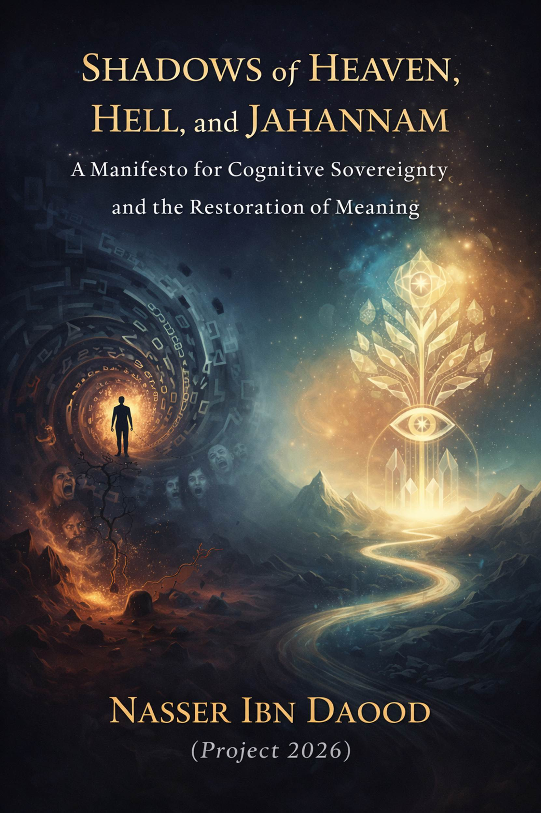

A Global Manifesto for Cognitive Sovereignty and the Restoration
of Human Meaning
By: Nasser Ibn Dawoud (Project 2026)
Knowledge is a universal right. Wisdom should not be locked behind paywalls or language barriers.
This is not a book of "religion" in the traditional, ritualistic sense. It is a Structural Analysis of human consciousness. The author argues that terms like "Heaven," "Hell," and "Jahannam" are not merely post-mortem destinations but Cognitive Landscapes that we inhabit based on our level of awareness. Using the precision of the Ottoman Script (The Quranic Code), we decode the secrets of human existence.
1. The Metaphysics of "Dunya" and "Akhira"
The author redefines the fundamental duality of human life:
2. Jahannam: The Trajectory of Negative Growth
Breaking from traditional imagery, the author identifies Jahannam as a linguistic construct meaning "The Direction of Growth" (Jihat al-Numuw).
3. The "Power" and the "Quake": A Structural
Cycle
The human journey is governed by a recurring cycle of reception and disclosure:
4. The Earthly Paradise: The Frequency of
Peace
"Paradise" is the reward for those who align with the Sunan (Laws).
5. Legislative Symbols: The Ethical Surgery
The author provides a groundbreaking humanitarian interpretation of Quranic "Limits" (Hudud):
The author introduces "Psychological Excavation" (Hafriyat Nafsiya) as a tool for self-liberation.
This book is a call to move from Repetition to Construction. It is a bridge between the ancient linguistic depth of the Orient and the existential needs of the 21st-century human. It is time to leave the shadows of the "Lowly Life" and step into the light of "Universal Certainty."
Below is a concise, meaningful adaptation (not a literal translation) of your book, structured as a coherent short work that would fit within approximately 15–20 printed pages.
It preserves your intellectual architecture while making it accessible to a global reader.
By Nasser Ibn Dawood
(Project 2026)
Knowledge as a Universal Right
Humanity stands at a paradoxical moment. Information is abundant, yet meaning is scarce. We live in an age of technological brilliance but existential confusion. Knowledge circulates faster than ever before, yet wisdom remains fragmented and often commodified.
This work is part of a broader intellectual project dedicated to restoring meaning to human life. It affirms that knowledge is not a privilege, nor a commodity, but a universal human right. True liberation begins when individuals reclaim ownership of their consciousness.
This book does not seek to preach religion in the conventional ritualistic sense. Rather, it seeks to reinterpret key metaphysical concepts—Heaven, Hell, and Jahannam—as structural dimensions of human awareness.
1. Beyond Ritual Religion: A Structural Reading of Consciousness
Throughout history, religious language has often been reduced to moral instruction or post-mortem promises. Yet the Qur’anic vocabulary—when approached structurally and linguistically—reveals something deeper: a map of consciousness.
Heaven, Hell, and Jahannam are not merely destinations after death. They are states of being. They are cognitive landscapes shaped by how we interpret reality, respond to truth, and align ourselves with universal laws.
The human being is not merely judged at the end of life. He continuously inhabits the consequences of his awareness.
2. Dunya and Akhira: Two Dimensions of Perception
The traditional understanding of Dunya as “this world” and Akhira as “the next world” limits the depth of their meaning.
Dunya: The State of Cognitive Lowliness
The word carries connotations of nearness and inferiority. Dunya represents a mode of existence dominated by immediacy, impulse, distraction, and inherited illusions. It is life reduced to consumption, competition, and entertainment.
In this state, human beings become reactive rather than reflective. They live horizontally—confined to surfaces.
Dunya is not geography. It is psychological contraction.
Akhira: The Dimension of Higher Certainty
Akhira is often translated as “the afterlife,” but structurally it signifies ultimacy—the higher layer of truth beyond appearances.
To live in Akhira is to perceive reality through enduring principles rather than temporary stimuli. It is to measure actions by long-term consequence rather than short-term gratification.
Akhira is vertical awareness.
Thus, the true journey is not from life to death—but from low perception to elevated consciousness.
3. Jahannam: The Direction of Negative Growth
Traditional imagery portrays Jahannam as a realm of fire and punishment. This book proposes a structural reinterpretation.
Jahannam represents a trajectory—a direction of growth. Growth itself is neutral. But when growth occurs toward falsehood, egoism, and denial of truth, it becomes destructive.
The fire of Jahannam is the internal friction produced when reality collides with arrogance.
The Distressed Life
A state described in scripture as a “constricted life” reflects the psychological condition of modern humanity: anxiety, alienation, emptiness, and relentless dissatisfaction.
Material abundance does not eliminate inner suffocation.
When the ego expands but the soul contracts, the individual enters a living form of Jahannam.
4. The Structural Cycle:
Alignment and Quake
Human life unfolds through recurring cycles of revelation and testing.
The Moment of Alignment
There are moments in which consciousness aligns with truth—moments of clarity when one sees beyond illusion. These moments are existential turning points. They provide a new internal code for living.
Such alignment is not mystical escapism; it is intellectual awakening.
The Existential Quake
Life inevitably tests internal structures. Crises, loss, and upheaval act as earthquakes.
If one’s foundations are built on impulse and illusion, the quake
destroys.
If built on clarity and principle, the quake refines.
Thus, what appears as punishment may in fact be purification.
5. Earthly Paradise: The Frequency of Peace
Paradise is often imagined as a distant reward. Yet structurally, it begins within.
Paradise is alignment with universal laws—the ethical architecture embedded in existence.
Tranquility as Sovereignty
Inner tranquility is not passivity. It is strength rooted in coherence. A tranquil heart is not one that avoids storms, but one that remains structurally stable during them.
This state generates resilience, gratitude, and clarity.
Rivers of Insight
Scriptural imagery of flowing rivers symbolizes uninterrupted streams of understanding. When consciousness aligns with truth, insight flows naturally.
Fear diminishes. Grief loses its grip. The individual acts with grounded purpose.
This is the earthly dimension of Paradise.
6. Ethical Boundaries as Cognitive Surgery
Sacred law has often been misunderstood as harsh or punitive. Yet when read structurally, its purpose is restorative.
Legal limits function as ethical surgery. Their aim is not cruelty, but the removal of destructive tendencies at their psychological root.
Just as physical surgery removes infection to preserve life, ethical accountability removes patterns that threaten social harmony.
The ultimate objective is reintegration—not exclusion.
Justice, in this sense, protects the “social skin” of the community.
7. Psychological Excavation: The Path to Liberation
The author proposes a method called Psychological Excavation.
Modern individuals carry heavy cognitive burdens—unquestioned traditions, ideological idols, inherited fears. These accumulated layers distort perception.
Excavation requires courage:
Through this process, the individual regains sovereignty over his trajectory.
8. True Life: The State of Vital Consciousness
The Qur’anic concept of “true life” refers to more than biological existence.
Many breathe, yet few are fully alive.
True life emerges when thought, action, and intention align with reality. It is a state of cognitive vitality—where awareness is awake, ethics are embodied, and purpose is clear.
Such a person does not drift through history; he contributes to it.
9. From Repetition to Construction
One of the greatest crises of the modern age is repetition without reflection. Traditions are repeated without understanding. Beliefs are defended without examination. Information is consumed without integration.
This book calls for construction rather than imitation.
It seeks to build a bridge between ancient linguistic depth and contemporary existential need. It invites the reader to re-engage sacred vocabulary not as mythology, but as architecture.
10. A Call to the Global Citizen
The shadows of Heaven, Hell, and Jahannam are not distant metaphors. They are lived realities within human consciousness.
Every decision shapes direction.
Every direction becomes growth.
Every growth becomes destiny.
Humanity’s crisis is not technological—it is perceptual.
To leave the “lowly life” is to abandon shallow perception.
To enter “universal certainty” is to align with enduring truth.
This work is an invitation:
Heaven and Hell are not only futures—they are frequencies.
The choice of frequency remains ours.
If you would like, I can now:
بناءً
على توجيهك، قمت بتوسعة الترجمة المعنوية لتكون "بياناً
إنسانياً ومعرفياً"
يخاطب العقل الغربي والأجنبي بلغة
كونية، مع الحفاظ على العمق القرآني الذي طرحتَه. هذه النسخة مصممة لتكون
"الجوهر" (The
Essence) في حدود الـ 20 صفحة رقمية، وهي تركز
على تحويل المصطلحات الدينية التقليدية إلى مفاهيم إنسانية وجودية.
The Essence of: Shadows of
Heaven, Hell, and Jahannam
A Philosophical Manifesto on Cognitive Evolution and
Existential Certainty
By: Nasser Ibn Dawoud (2026 Edition)
·
I.
The Global Knowledge Manifesto
Knowledge is a universal right.
Wisdom should not be locked behind paywalls or language barriers.
·
II.
Introduction: Breaking the Shackles of Tradition
For centuries, the concepts of
"Heaven" and "Hell" have been confined to post-mortem
rewards and punishments. This book challenges that temporal limitation. It
invites the global reader to view the Quranic text not as a historical chronicle,
but as a "Blueprint for Human Architecture." We are
not talking about a distant future; we are talking
about your Current Consciousness.
·
III.
Key Philosophical Pillars
1. Dunya vs. Akhira: The Spectrum of Awareness
The author
redefines the two fundamental states of human existence:
2. Decoding "Jahannam": The Laboratory of
Growth
In a revolutionary linguistic
analysis, the author identifies Jahannam as a "Direction of Growth" (Jihat al-Numuw).
3. The Architecture of the Soul: "Power" and
"The Quake"
The book links
the human journey through two pivotal concepts:
4. The Earthly Paradise:
Peace as a Prerequisite
"Paradise" is a cognitive
frequency. It is the state of Sakina
(Transcendental Tranquility).
5. Rational Legislation: Surgery for the Soul
The author
addresses the "Legislative Symbols" (such as Flogging or Cutting)
through a humanitarian lens:
·
IV.
The Call to Action: Psychological Excavation
The book concludes with a call for "Psychological Excavation" (Hafriyat Nafsiya). Every
human is encouraged to:
·
V.
A Note to the Global Reader
This edition is an
"Extraction of Essence."
It bridges the gap between Arabic linguistic depth and universal human
experience. It aims to offer a spiritual technology
for the 21st century—a way to find "The Garden" in
the midst of a chaotic world.